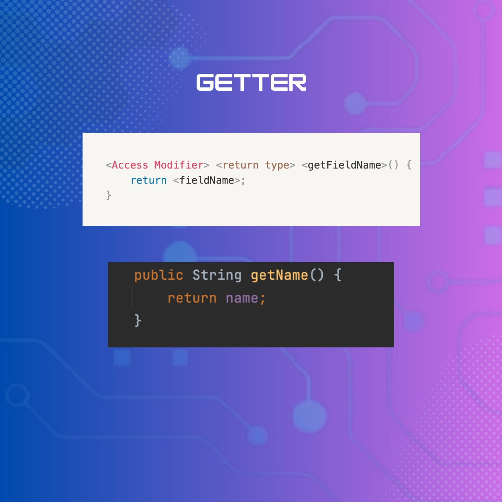

Encapsulation (Part 2)
🔰 Tiếp nối bài viết về tính chất Đóng gói - Encapsulation, hôm nay, chúng ta sẽ cùng tìm hiểu cụ thể về những thành phần quan trọng giúp đảm bảo tính đóng gói trong Java nhé!
Bài viết này sẽ trình bày cụ thể về Access Modifier và Getter, Setter:
===============================
📍 Access Modifier:
Access Modifer trong Java xác định phạm vi truy cập của biến, phương thức hoặc lớp.
Trong Java, có 4 phạm vi truy cập chính như sau:
- private (-): chỉ được truy cập trong phạm vi lớp.
- default: trường hợp mặc định khi bạn không khai báo access modifier kèm theo, chỉ được phép truy cập trong cùng package.
- protected (#): truy cập bên trong package và package kế thừa. Có thể được áp dụng cho biến, phương thức, constructor, không thể áp dụng cho lớp.
- public (+): được truy cập ở mọi nơi.
Để dễ hình dung, chúng ta có thể liên hệ qua “đối tượng hiển thị” của bài post của bạn trên Facebook. “Chỉ mình tôi" sẽ tương tự như “private", “Công khai” tương đương với “public"...
📍 Getter và Setter:

Getter và Setter là hai phương thức dùng để truy cập, thay đổi giá trị của một thuộc tính cụ thể, đảm bảo tính đóng gói trong Java.
- Getter được dùng để lấy giá trị của thuộc tính.
- Setter được dùng để cập nhật giá trị cho các thuộc tính.
Lấy ví dụ chiếc ví của chính bạn, người khác không thể tuỳ tiện sử dụng chiếc ví ấy.
Nếu ai đó muốn biết số dư trong ví của bạn, họ sẽ yêu cầu giá trị của biến "số dư" bằng cách sử dụng một getter. Bằng hàm getter, bạn sẽ mở ví của mình, kiểm tra số tiền và sau đó thông báo giá trị cho họ.
Tương tự, nếu ai đó muốn thay đổi số tiền trong ví bạn (mượn tiền hay cho bạn thêm tiền), họ sẽ cung cấp cho bạn giá trị mới. Bạn sẽ lắng nghe những gì họ nói và cập nhật biến "số dư" tương ứng, cập nhật số tiền mới.
Vì vậy, sử dụng Getter, Setter sẽ đảm bảo tính toàn vẹn của dữ liệu.
Khi thiết lập hàm Setter, các bạn còn có thể thêm những điều kiện ràng buộc để validate dữ liệu theo những điều kiện cụ thể.